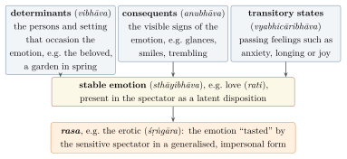

Chapter 21: Ecology and the Arts in Global Conversation¶
yat te bhūme vikhanāmi kṣipraṃ tad api rohatu
mā te marma vimṛgvari mā te hṛdayam arpipam
Whatever I dig from you, Earth, may that grow back quickly. May I not strike your vital points or your heart, O purifier.
— Atharvaveda 12.1.35 (the hymn to the Earth)
21.1 Introduction¶
Two further areas in which Indian traditions have entered global conversation are environmental thought and the arts. In both, Indian ideas have been genuinely influential, and in both they have been idealised. This chapter considers first the claim that Indian religions offer a distinctive ecological ethic, and the movements and critiques it has generated; it then turns to Indian aesthetic theory and to the international careers of Indian art, music and dance. The traditional knowledge of agriculture, forests and animals is the subject of Volume 15, architecture and sculpture of Volume 16, crafts of Volume 17, music, theatre and dance of Volume 9, literature and poetics of Volume 8, and the knowledge of tribal communities of Volume 23.
21.2 Indian Traditions and the Environment¶
21.2.1 Textual resources¶
Indian texts contain many passages that express reverence for the earth, rivers, trees and animals. The hymn to the Earth in the Atharvaveda (12.1), with its sixty-three verses, addresses the earth as a mother — “the Earth is my mother, I am the son of the Earth” (12.1.12) — and asks, in the verse quoted at the head of this chapter, that what is dug from her may grow again. Rivers, above all the Gaṅgā, were worshipped as goddesses. Trees were planted and protected for merit, and some, like the aśvattha (pipal), were sacred. The Jain and Buddhist ethics of non-injury, discussed in Chapter 7, extended moral concern to animals and, for Jains, to the elements and plants. The Arthaśāstra prescribes protected forests for elephants and sanctuaries where animals may not be harmed, and the emperor Aśoka’s fifth pillar edict lists animals that were not to be killed. Across India, villages maintained sacred groves dedicated to local deities, discussed below.
21.2.2 Movements¶
The Bishnois.
The Bishnoi community of western Rajasthan follows twenty-nine rules taught by Guru Jambheśvar (Jambhoji), whose sect is traditionally dated to 1485; the rules include protecting trees and animals. According to Bishnoi tradition, in 1730 a woman named Amṛtā Devī and more than three hundred others were killed at Khejarli while resisting the felling of khejṛī trees for the Maharaja of Jodhpur. The story, told in the community’s own records and songs, has become an emblem of Indian environmentalism; its details rest on tradition rather than on contemporary documents.
Chipko.
The Chipko movement began in 1973 in the Garhwal Himalaya, when villagers organised by the Dasholi Gram Swarajya Sangh, under Chandi Prasad Bhatt, prevented a sports-goods company from felling trees near Mandal by threatening to hug them (cipko, “cling”). In March 1974 at Reni, women led by Gaura Devi stopped loggers while the men of the village were away. Ramachandra Guha’s history shows that Chipko was above all a movement of hill peasants for their rights to the forests on which their livelihoods depended, against commercial forestry by the state and contractors, and that it drew on a long tradition of peasant forest protests and on Gandhian methods and workers (Guha 1989b). Later presentations of Chipko as an expression of Hindu reverence for nature, or as a movement of women defending the feminine principle (Vandana Shiva’s Staying Alive, 1988), captured some aspects of it and obscured others (Shiva 1988).
Later movements.
The campaign that saved the rainforest of Silent Valley in Kerala from a hydroelectric project (declared a national park in 1984), the Narmada Bachao Andolan led by Medha Patkar against the displacement of villagers by the Sardar Sarovar dam from the mid-1980s, and many local struggles over forests, mining and water belong to the same tradition of environmental action rooted in questions of livelihood and justice, a pattern that historians of Indian environmentalism have called an “environmentalism of the poor”.
21.2.3 Sacred groves¶
Among the most concrete links between religion and conservation in India are sacred groves: patches of forest dedicated to a local deity, often a goddess or a village guardian, within which the cutting of trees and sometimes the gathering of any material is forbidden. They are known by many local names — devrāī in Maharashtra, kāvu in Kerala, sarnā among the Adivasi communities of Jharkhand, law kyntang in Meghalaya — and they range in size from a few trees to many hectares. Studies begun in the 1970s by Madhav Gadgil and V. D. Vartak in the Western Ghats drew attention to them as refuges for plant and animal species that had disappeared from the surrounding landscape, and thousands have since been documented across the country (Gadgil and Guha 1992). The groves show how a religious prohibition can have ecological effects. They also show the limits of such protection: many groves have shrunk or vanished as land pressure has grown, as belief has weakened, or as the worship of the local deity has been replaced by temple-building that clears the forest it was meant to protect. Their protection today depends on law and community management as much as on religion; the Biological Diversity Act and the Forest Rights Act (Chapter 22) provide some of the means.
21.2.4 Rivers as persons¶
In March 2017 the High Court of Uttarakhand declared the Gaṅgā and the Yamunā to be legal persons with guardians who could act on their behalf, citing their sacred status among Hindus as part of its reasoning. The Supreme Court stayed the order a few months later. In the same month, New Zealand’s parliament recognised the Whanganui River as a legal person, in recognition of the Māori relationship with it; Ecuador’s constitution (2008) and Bolivian legislation (2010) recognise rights of nature. These developments show how religious and indigenous understandings of nature have entered modern law. Kelly Alley’s study of the Gaṅgā at Banaras also shows their limits: many devotees hold that the river, being divine, cannot be made impure by human waste, a belief that can coexist with severe pollution (Alley 2002).
21.3 “Hindu Ecology” and Its Critics¶
21.3.1 The argument¶
In 1967 the historian Lynn White argued in Science that the Judaeo-Christian doctrine of human dominion over nature lay at the historical roots of the ecological crisis. His essay encouraged a search for alternative traditions, and Indian religions — with their non-injury, sacred rivers and groves, and doctrines of the unity of all life — were widely proposed as ecological by nature. The Norwegian philosopher Arne Naess, founder of “deep ecology”, drew on Spinoza and on Gandhi’s ethic of non-violence in developing his idea of “self-realisation” as identification with all life (Naess 1989). Many Indian and Western writers have argued that Advaita Vedānta, Jain non-violence or Gandhian simplicity provide the foundations for an environmental ethic (Chapple and Tucker 2000).
21.3.2 The criticisms¶
These arguments have been criticised on several grounds.
-
Philosophical. Lance Nelson and others pointed out that Advaita, which regards the world as ultimately unreal and seeks liberation from it, does not obviously support concern for the natural world; the same is true of other renunciant traditions whose aim is to escape embodied existence (Nelson 1998).
-
Historical. India’s environmental history includes deforestation, the hunting of wildlife by kings and the depletion of resources long before modern industry, as well as conservation. The sacredness of a river or grove did not prevent its degradation when economic pressures were strong.
-
Political. Ramachandra Guha argued that American deep ecology, with its emphasis on wilderness preservation, was ill-suited to India, where the protection of “wilderness” had often meant the eviction of tribal and peasant communities from forests, and where the urgent environmental questions were about livelihoods and justice (Guha 1989a). Mukul Sharma has shown how religious environmentalism in India has sometimes been joined to Hindu nationalist politics, with exclusionary consequences (Sharma 2012).
21.3.3 What remains¶
The critics do not show that Indian traditions have nothing to contribute to environmental thought. They show that the contribution must be made carefully: by attending to specific practices and communities (sacred groves, Bishnoi rules, tribal forest management, Jain non-violence) rather than to a generalised “Indian worldview”; by recognising that these traditions also had other aims; and by joining reverence for nature to justice for the people who depend on it. Gandhi’s critique of industrial civilisation and his ideal of simplicity (Chapter 12) and the movements of the poor described above may be the most valuable Indian contributions.
21.4 Indian Aesthetics¶
21.4.1 Rasa¶
The theory of rasa (“taste” or “relish”) is set out in the Nāṭyaśāstra attributed to Bharata, a treatise on drama, dance and music compiled over several centuries around the beginning of the Common Era (Volume 9). Its central statement is the “rasa-sūtra”:
Nāṭyaśāstra 6
vibhāvānubhāvavyabhicārisaṃyogād rasaniṣpattiḥ
Rasa arises from the combination of the determinants, the consequents and the transitory states.
The Nāṭyaśāstra names eight rasas — the erotic (śṛṅgāra), the comic, the pathetic (karuṇa), the furious, the heroic, the terrible, the odious and the marvellous — each corresponding to a stable emotion (sthāyibhāva) and associated with a colour and a presiding deity: the erotic, for example, is dark blue-black (śyāma) and presided over by Viṣṇu. A ninth, the tranquil (śānta), was added later; it is first clearly listed by Udbhaṭa and was defended by Abhinavagupta. Table 21.1 sets out the scheme, and Figure 21.1 the relation between the components named in the rasa-sūtra.

| Rasa | Stable emotion (sthāyibhāva) | Colour | Deity |
|---|---|---|---|
| erotic (śṛṅgāra) | love (rati) | dark (śyāma) | Viṣṇu |
| comic (hāsya) | laughter (hāsa) | white | Śiva’s attendants (Pramathas) |
| pathetic (karuṇa) | sorrow (śoka) | dove-grey | Yama |
| furious (raudra) | anger (krodha) | red | Rudra |
| heroic (vīra) | energy (utsāha) | pale gold (gaura) | Indra |
| terrible (bhayānaka) | fear (bhaya) | black | Kāla |
| odious (bībhatsa) | disgust (jugupsā) | blue | Mahākāla |
| marvellous (adbhuta) | wonder (vismaya) | yellow | Brahmā |
| tranquil (śānta), later addition | calm (śama) or, for Abhinavagupta, knowledge of the truth | — | — |
The Kashmiri philosopher Abhinavagupta (c. 950–1016) gave the theory its most profound interpretation in his commentary on the Nāṭyaśāstra, the Abhinavabhāratī, and in his commentary on Ānandavardhana’s Dhvanyāloka (9th century). He argued that rasa is not the emotion of a character, nor the spectator’s personal emotion, but an emotion “generalised” (sādhāraṇīkṛta) and freed from personal interest, savoured by a sensitive spectator in a state of absorbed awareness. The later theorist Viśvanātha described this experience as “a twin of the tasting of Brahman” (brahmāsvādasahodara). Ānandavardhana’s theory of suggestion (dhvani) held that the essence of poetry is a meaning that is not stated but suggested, and that rasa is always suggested (Ingalls et al. 1990; Pollock 2016; Gnoli 1956).
21.4.2 Comparisons¶
Rasa theory invites comparison with Aristotle’s theory of tragedy and its “purgation” (katharsis) of pity and fear, with Kant’s “disinterested” pleasure in the beautiful and with modern theories of aesthetic emotion. The comparisons are illuminating, but the differences matter. Bharata’s theory was a practical analysis for the stage, concerned with the means by which a performance produces an emotional relish; Abhinavagupta’s was embedded in a Śaiva metaphysics of consciousness; and both concerned an audience of connoisseurs (sahṛdaya) whose cultivation was presupposed. Sheldon Pollock’s Rasa Reader presents the debates among the Indian theorists themselves, which were as lively as any in European aesthetics (Pollock 2016). Volume 8 treats the theory of literature and Volume 9 the performing arts.
21.5 Indian Art in the Eyes of the World¶
21.5.1 From “monsters” to masterpieces¶
European visitors to India long found its religious art incomprehensible. Partha Mitter’s Much Maligned Monsters traces how early modern travellers described many-armed gods as monsters or devils, and how even sympathetic nineteenth-century critics judged Indian sculpture by the standards of Greek art (Mitter 1977). In the early twentieth century, the British art teacher E. B. Havell and the Ceylonese–English scholar Ananda Kentish Coomaraswamy (1877–1947) argued that Indian art was a spiritual art, which should be judged by its own principles. Coomaraswamy, who became a curator at the Museum of Fine Arts in Boston from 1917, interpreted the image of Śiva Naṭarāja as a symbol of cosmic rhythm in The Dance of Śiva (1918), wrote the first comprehensive History of Indian and Indonesian Art (1927), and in The Transformation of Nature in Art (1934) argued that traditional Indian, Chinese and medieval European art shared a common theory of art as the expression of a spiritual idea rather than the imitation of nature (Coomaraswamy 1918, 1927, 1934). In his later years he became a leading exponent of the “traditionalist” view that all traditional civilisations shared a single metaphysical wisdom, a view that has been influential but, like the perennial philosophy discussed in Chapter 9, contested. Tapati Guha-Thakurta has shown how museums, archaeology and art history in colonial and post-colonial India constructed the categories through which Indian art is now seen (Guha-Thakurta 2004).
21.5.2 Southeast Asia¶
From the early centuries CE, kingdoms in mainland and island Southeast Asia adopted Sanskrit, Indian scripts, Hindu and Buddhist religion and Indian forms of kingship and art. Their monuments include Borobudur (c. 800; Figure 3.4 in Chapter 3) and Prambanan (9th century) in Java, Angkor Wat, built for the Khmer king Sūryavarman II in the twelfth century, and the temples of Bagan in Myanmar. An older scholarship spoke of the “Indianisation” of Southeast Asia, as if Indian culture had been transplanted. Historians now emphasise that Southeast Asian rulers and communities selected and transformed Indian elements for their own purposes, producing original civilisations that should not be seen as provincial versions of India. The maritime routes along which these exchanges travelled are discussed in Volume 19.
21.5.3 The epics in Southeast Asia¶
The Rāmāyaṇa travelled with Indian culture across Southeast Asia and was retold in each society in its own way. In Java the Old Javanese Kakawin Rāmāyaṇa (9th or 10th century) adapted the Sanskrit poem to Javanese poetics; the reliefs of the Prambanan temples illustrate the story; and the shadow-puppet theatre (wayang) of Java and Bali, performed in a predominantly Muslim society, still draws on the epics. In Thailand the Ramakien, a version composed in its present form under King Rāma I at the end of the eighteenth century, is the national epic, painted on the walls of the royal temple in Bangkok; in Cambodia the Reamker and in Laos and Myanmar other versions have their own episodes and emphases. Some of these versions differ substantially from Vālmīki’s: in the Malay Hikayat Seri Rama the story is framed by Islamic elements, and in several versions Sītā is the daughter of Rāvaṇa. A. K. Ramanujan’s essay on “three hundred Rāmāyaṇas” made the point that there is no single authoritative telling (Volume 7). The Southeast Asian Rāmāyaṇas are a prime example of synthesis in the sense this volume has defended: a shared story, transformed by each culture into something of its own.
21.5.4 Modern Indian art¶
Modern Indian art was shaped by debates about tradition and modernity similar to those described in Part II. The “Bengal School” led by Abanindranath Tagore (1871–1951), Rabindranath’s nephew, with the support of E. B. Havell, rejected the academic realism taught in colonial art schools and sought an Indian style based on Mughal and Rajput miniatures, Ajanta and Japanese ink painting. Rabindranath himself began painting in his late sixties, producing more than two thousand expressive works, shown in Paris in 1930. Amrita Sher-Gil (1913–1941), trained in Paris, combined European post-impressionism with the lessons of Ajanta and Indian miniature painting. After independence, the Progressive Artists’ Group, founded in Bombay in 1947 by F. N. Souza, S. H. Raza, M. F. Husain and others, rejected both academic realism and the Bengal School’s revivalism in favour of an international modernism with Indian subjects. Tapati Guha-Thakurta and Partha Mitter have traced these debates (Guha-Thakurta 2004; Mitter 1977).
21.6 Indian Literature in World Literature¶
Indian literature entered European consciousness through translation at the end of the eighteenth century. Charles Wilkins’s English Bhagavadgītā (1785) was followed by William Jones’s translation of Kālidāsa’s play Abhijñānaśākuntalam as Sacontalá, or the Fatal Ring (1789). Georg Forster’s German version of Jones’s translation (1791) captivated German readers. Goethe wrote an admiring epigram on the play in 1791, and the “Prelude in the Theatre” with which he later opened Faust is generally thought to have been suggested by the prologue between the director and the actress in Kālidāsa’s drama. Herder, Schiller and the Schlegels admired it; Jones’s translation of Jayadeva’s Gītagovinda (1792) introduced Europe to Sanskrit devotional love-poetry. The Romantic image of India as a land of poetry and dream owed much to these few texts.
In the twentieth century the traffic grew and changed direction. Tagore’s Nobel Prize of 1913 (Chapter 13) made a modern Indian poet famous worldwide. Indian writers in English — Mulk Raj Anand, R. K. Narayan, Raja Rao, and later Salman Rushdie, whose Midnight’s Children won the Booker Prize in 1981, and a large generation after him — made Indian experience part of world literature in English. Translation from the Indian languages into English, long neglected, has expanded; A. K. Ramanujan’s versions of classical Tamil poetry and of the Kannada vacanas showed readers who knew only the Sanskrit classics how varied Indian literature was. The history illustrates a point made throughout this volume: what “Indian literature” meant to the world depended on what was translated, by whom, and for what purpose.
21.7 Stories and Games That Travelled¶
Some of India’s most far-reaching contributions to world culture travelled not as philosophy but as stories and games, often without their Indian origin being remembered. The Pañcatantra, a collection of animal fables illustrating the art of statecraft, was translated into Middle Persian in the sixth century at the court of the Sasanian king Khusraw Anūshirvān, and from Middle Persian into Arabic around 750 by Ibn al-Muqaffaʿ as Kalīla wa Dimna, named after the two jackals of its first book. From Arabic it passed into Persian, Hebrew, Latin, Greek and the vernaculars of Europe; the French fabulist La Fontaine acknowledged, in the preface to his later fables (1678), a debt to “Pilpay, the Indian sage”. The legend of the Buddha’s renunciation travelled westward through Manichaean, Arabic and Georgian versions to become the Christian romance of Barlaam and Josaphat, in which the prince Josaphat — whose name derives, through the Arabic Būdhāsaf, from bodhisattva — renounces his kingdom for a life of holiness; Josaphat came to be honoured as a saint in the Christian calendar. Chess is generally believed by historians of games to have developed in India by about the sixth century as caturaṅga, “the four limbs” of an army, and to have passed through Persia (shatranj) to the Islamic world and Europe. These are among the best-attested cases of Indian cultural transmission, and they owe nothing to inflated claims (Volume 8).
21.8 Architecture of Encounter¶
India’s buildings record its encounters as clearly as its texts. The first mosques of the Delhi Sultanate, such as the Quwwat al-Islām mosque beside the Quṭb Mīnār (from the 1190s), were built partly from the pillars of demolished temples, and Indian craftsmen carved their arches and inscriptions; the result is at once a monument of conquest and a hybrid of two building traditions. Over the following centuries an Indo-Islamic architecture developed that combined the arch, dome and minaret of the Islamic world with Indian bracketed columns, eaves, kiosks (chhatrī) and decorative motifs. Akbar’s city of Fatehpur Sikri (1570s) mixes Persian and Rajput forms; Rajput palaces adopted Mughal gardens and halls; the Kachhwaha raja Man Singh built for Kṛṣṇa at Vrindavan in 1590 the Govindadeva temple, whose vaulted interior shows Mughal techniques; and the Taj Mahal (1632–1653) brought the synthesis to its most celebrated form. The Sikh Harimandir at Amritsar, rebuilt in the eighteenth and nineteenth centuries, uses a similar vocabulary of domes and kiosks. Architecture is discussed in Volume 16; here it is enough to note that the history of India’s buildings, like the history of its ideas, includes both destruction and creative synthesis.
21.9 Cloth: India’s Most Widely Travelled Art¶
For most of history, the Indian product that reached the largest number of people outside India was neither a text nor an idea but cloth. Indian cottons, dyed with mordants and resists in colours that did not fade, were traded across the Indian Ocean from antiquity: fragments of Gujarati block-printed cotton have been excavated at Fustat in Egypt, and Indian textiles were the principal currency of the spice trade with Southeast Asia, where they were treasured as heirlooms and ritual objects. When the European trading companies arrived, Indian cloth became their most important cargo. English words record the trade: “calico” from Calicut, “chintz” from the Hindi chīṇṭ, “dungaree” and “bandanna”. By the late seventeenth century the fashion for Indian chintz in England and France was so great that domestic wool and silk weavers demanded protection; France prohibited printed Indian cottons in 1686, and Britain restricted and then, by the Calico Act of 1721, largely banned their use.
The later history reversed the flow. Mechanised spinning and weaving in Britain, together with colonial tariff policies, flooded India with cheap machine-made cloth in the nineteenth century and contributed to the decline of many Indian weaving communities. Gandhi’s khādī movement (Chapter 12) made hand-spinning a symbol of the reversal of this history, and the spinning wheel appeared on the flag of the Indian National Congress. Indian textiles thus connect several of the themes of this volume: the global circulation of Indian craft knowledge, held by communities of weavers and dyers rather than recorded in Sanskrit texts; the role of colonial economics; and the use of tradition in nationalist politics. Volume 17 of this series treats the crafts and textiles in detail, and Volume 19 the trade.
21.10 Painting at the Mughal Court¶
Few episodes in Indian art show synthesis as clearly as the painting workshops of the Mughal emperors. Humāyūn brought two Persian masters, Mīr Sayyid ʿAlī and ʿAbd al-Ṣamad, from the Safavid court, and under Akbar (r. 1556–1605) they directed a large imperial atelier in which painters of Indian origin, many of them Hindus from families of craftsmen, worked alongside them. Its first great project was an illustrated Hamzanāma, the adventures of the Prophet’s uncle Ḥamza, in some fourteen hundred large paintings on cloth, produced over about fifteen years. In the 1580s the atelier illustrated the Persian translation of the Mahābhārata, the Razmnāma (“Book of War”), and of the Rāmāyaṇa, part of Akbar’s programme of translating Sanskrit works (Chapter 16) (Truschke 2016). Painters such as Basāwan and Daswanth, who came from Indian backgrounds, developed a style that combined the jewel-like colour and composition of Persian painting with Indian vitality of movement and, increasingly, with techniques learned from the European engravings and Bibles brought by Jesuit missionaries: shading, recession in space and naturalistic portraiture. Under Jahāngīr (r. 1605–1627) the emphasis shifted to portraits and to precise studies of birds, animals and plants by artists such as Abū’l-Ḥasan and Manṣūr.
Mughal painting in turn influenced the painting of the Rajput and Pahari courts, where artists applied Mughal techniques to Hindu devotional subjects — the loves of Rādhā and Kṛṣṇa, the musical modes (rāgamālā), the seasons — in styles that remained distinct and local. The history shows an art formed by Persian, Indian and European elements, produced by Muslim and Hindu artists for Muslim and Hindu patrons, and it is a better model of what samanvaya has actually meant in Indian history than any general statement about the unity of religions.
21.11 Music, Dance and Film Abroad¶
21.11.1 Music¶
Indian classical music became known in the West largely through the work of a few musicians in the 1950s and 1960s. The sitarist Ravi Shankar (1920–2012) and the sarod player Ali Akbar Khan, both students of Allauddin Khan of Maihar, toured Europe and America; Shankar’s recordings with the violinist Yehudi Menuhin (West Meets East, 1967) and his teaching of George Harrison of the Beatles from 1966 brought the sitar into Western popular music, and he played at the Monterey (1967) and Woodstock (1969) festivals. Ali Akbar Khan founded a college of music in California in 1967.
Comparisons between Indian and Western music have been made since the eighteenth century, when William Jones wrote an essay on the musical modes of the Hindus. The rāga is often compared with the Western mode or scale, but it is more than either: a melodic framework defined by a set of notes, characteristic ascending and descending movements, emphasised notes and typical phrases, associated in the classical theory with particular times of day, seasons and moods. The tāla is a rhythmic cycle that may run to many beats, within which performers improvise with great freedom. Indian music developed without harmony in the Western sense, but with an elaborate theory of intervals — the twenty-two śrutis of the octave described in the Nāṭyaśāstra — and a performance practice in which improvisation within strict rules is central. The meeting of the two traditions has produced both genuine collaboration and much superficial “fusion”; Volume 9 discusses the theory and history of Indian music in detail. Peter Lavezzoli’s history gives an account of this encounter and its influence on jazz, rock and minimalist composers (Lavezzoli 2006). Ravi Shankar was awarded the Bharat Ratna in 1999.
21.11.2 Music, nation and community at home¶
The international career of Indian music had a domestic counterpart in which questions of religion, caste and nation were prominent. In the north, the leading performers of Hindustani music in the nineteenth century were largely hereditary professionals, many of them Muslim, organised in lineages (gharānā) and dependent on princely patronage. Two Maharashtrian Brahmin reformers set out to make the music respectable and teachable to the educated middle class. Vishnu Narayan Bhatkhande (1860–1936) collected compositions from hereditary musicians, published them in notation, organised all-India music conferences from 1916 and classified the rāgas into ten parent scales (thāṭ); Vishnu Digambar Paluskar (1872–1931) founded the Gandharva Mahavidyalaya at Lahore in 1901, a school that gave music a devotional Hindu framing. Janaki Bakhle has shown how these reforms, while opening classical music to new audiences, also tended to recast it as an ancient Hindu art and to marginalise the Muslim hereditary musicians who had preserved it (Bakhle 2005). In the south, the Madras Music Academy (founded 1928) and the concert culture of the city’s Brahmin middle class shaped Carnatic music in a similar way, displacing the hereditary performers, including the women of the devadāsī communities, from whom much of the repertoire came. Recent critics, among them the vocalist T. M. Krishna, have argued that the social exclusiveness of the Carnatic concert world is a continuing problem. The history of Indian music is thus a history of synthesis — of Persian and Indian, courtly and devotional, hereditary and amateur — and also of the boundaries that modern institutions drew within it.
21.11.3 Dance¶
Modern Indian dance was shaped by revival and reinvention. Uday Shankar (1900–1977), Ravi’s elder brother, created a modern Indian dance after touring with the Russian ballerina Anna Pavlova in the 1920s. In the 1930s Rukmini Devi Arundale, founder of the Kalakshetra academy in Madras (1936), and others reconstructed the solo temple and court dance of South India as “Bharatanatyam”, a classical art for the respectable middle classes. The revival had a cost: the hereditary women performers (devadāsī) who had carried the tradition were stigmatised, and the Madras Devadasis (Prevention of Dedication) Act of 1947 ended the institution; the history is discussed in Volume 9. Today Indian classical dance forms are taught worldwide, and choreographers such as Akram Khan have combined Kathak with contemporary dance.
The traffic in dance, as in music, ran in both directions. Western dancers drew on Indian themes before Indian dance was widely seen abroad: the American Ruth St. Denis created her solo “Radha” in 1906, an exotic fantasy of a temple dance inspired by images and descriptions rather than by Indian teachers, and Anna Pavlova’s interest in Indian dance encouraged Uday Shankar’s career. Later generations of Western students trained seriously with Indian teachers, and Indian dancers in turn absorbed the techniques of modern dance and ballet. Chandralekha (1928–2006), working in Madras, combined Bharatanatyam with yoga and the martial art of Kalarippayattu to create a contemporary dance that questioned the devotional and gender conventions of the revived classical form. The history is one of mutual influence, in which the claim of any form to timeless purity is difficult to sustain.
21.11.4 Film¶
India’s film industries, working in many languages, together produce more feature films each year than those of any other country. Satyajit Ray’s Pather Panchali (1955) and its sequels won international recognition, and Ray received an honorary Academy Award in 1992; the Hindi popular cinema of Bombay, often called “Bollywood”, has audiences across South Asia, the Middle East, Africa, Central Asia and the diaspora. The popular film’s blend of genres, songs and dances is sometimes compared with the classical theory of rasa, a comparison that illuminates its emotional logic but should not be pressed into a claim of direct descent.
Indian cinema has also been a powerful medium for the retelling of religious narratives. The first Indian feature film, Dadasaheb Phalke’s Raja Harishchandra (1913), told the Purāṇic story of the truthful king discussed in Chapter 7, and “mythological” films remained a major genre for decades. The television serials of the Rāmāyaṇa (1987–88) and the Mahābhārata (1988–90), broadcast on the state network Doordarshan, drew enormous audiences and created standard visual images of the epic characters for a generation. Scholars have noted that the Rāmāyaṇa serial coincided with, and was used by, the political campaign to build a temple at Ayodhya. Modern media can thus turn a plural narrative tradition — the “many Rāmāyaṇas” discussed above — into a single authoritative version, with consequences for religious and political life.
21.11.5 Heritage¶
India has more than forty properties on UNESCO’s World Heritage List, including the Ajanta and Ellora caves, Khajuraho, Hampi, the Great Living Chola Temples, the Taj Mahal and the archaeological site of Nālandā. On the list of the Intangible Cultural Heritage of Humanity are Vedic chanting and Kūṭiyāṭṭam Sanskrit theatre (both 2008), the Rammān festival of Garhwal, Chhau dance, the Mudiyēṭṭu ritual theatre of Kerala, the Saṅkīrtana singing and drumming of Manipur, yoga (2016), the Kumbh Mela (2017), Durgā Pūjā in Kolkata (2021) and the Garbā dance of Gujarat (2023), among others. These recognitions are valuable, but they also invite caution: heritage listing can freeze living traditions into official forms and favour some communities’ practices over others.
21.12 Assessment¶
In ecology and in the arts, Indian traditions have given the world real things: practices of conservation, movements for environmental justice, a sophisticated theory of aesthetic experience, great works of sculpture and architecture, musical and dance traditions of extraordinary refinement. They have also been used as screens for projection — of Western longing for an ecological or spiritual alternative, and of Indian longing for a flattering image of the past. The contributions are best appreciated when the projections are recognised for what they are.
Further Reading¶
-
Guha (1989b) and Gadgil and Guha (1992): Chipko and the ecological history of India.
-
Nelson (1998), Chapple and Tucker (2000) and Sharma (2012): religion and ecology in India, for and against.
-
Alley (2002): the Gaṅgā as sacred river and polluted water.
-
Pollock (2016) and Ingalls et al. (1990): Indian aesthetic theory.
-
Mitter (1977) and Guha-Thakurta (2004): Indian art in European eyes and in colonial institutions.
-
Lavezzoli (2006): Indian music in the West.